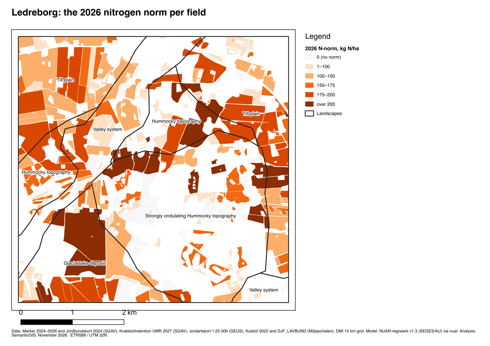
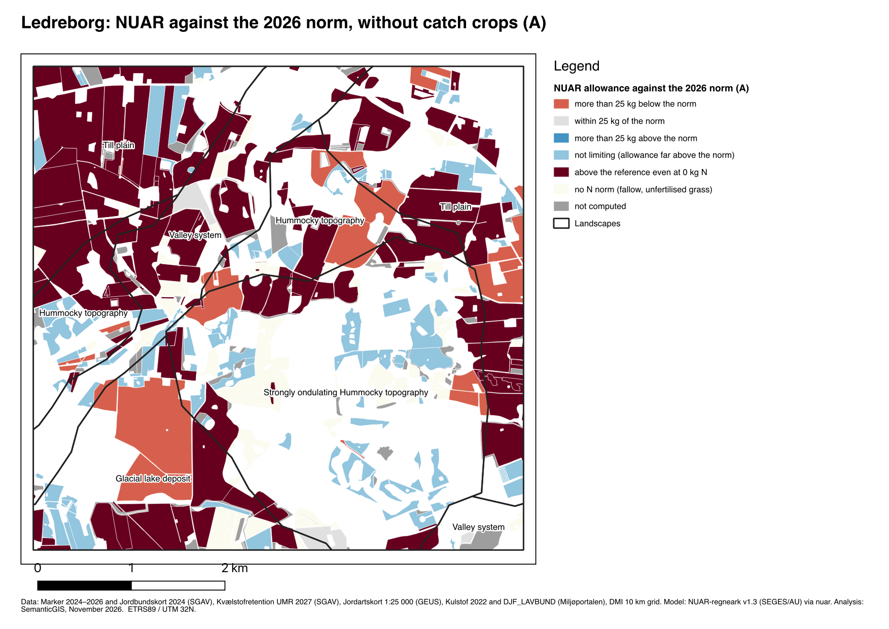
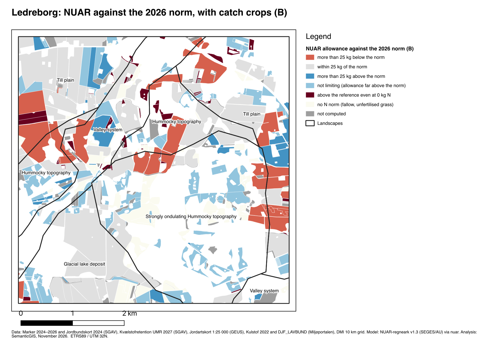
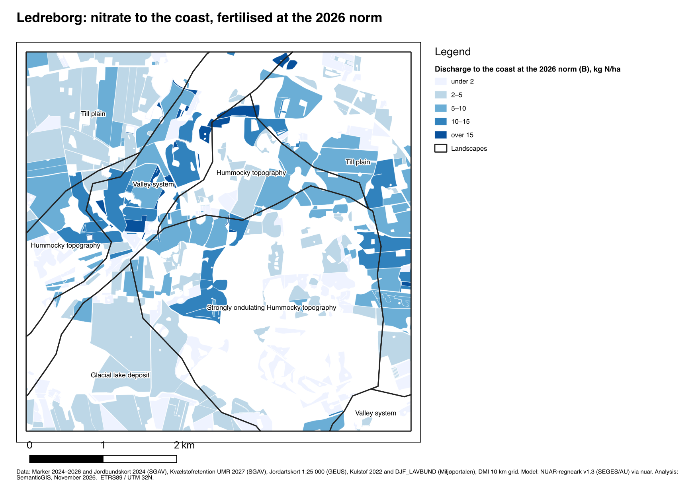

A worked case for the course Environmental Regulation and Management with GIS, Theme 3.1 (nitrogen in the agro-environment: pollution and regulation). It builds on Calculating permitted fertiliser with NUAR (Example), which runs the NUAR model for one point, and Crop rotations at Ledreborg (Example), which gives the crops of each field. Hub: Agriculture.
Until 2026 a field’s nitrogen was set by a norm: a number per crop and soil type, the same everywhere in Denmark. From 2027 the discharge-based regulation (NUAR) ties it to how much nitrate the field is modelled to leach. Run for the fields of the Ledreborg landscapes, the two regimes give the same answer for many cereal fields, but only if the fields have a catch crop. Without catch crops almost no arable field reaches NUAR’s yardstick even with no fertiliser at all. With catch crops, winter wheat and spring barley stay close to their norms, winter canola loses most of its nitrogen (38 instead of 188 kg N/ha), and grass is barely limited.
Example data
ledreborg_nuar_example_data.zip (0.3 MB), a snapshot package: one row per field piece with every input the model got (crops 2024–2026, soil, subsoil, lowland, retention, climate cell, covers) and both results, the landscapes, and the crop code table. The NUAR workbook’s own tables are not included: they are SEGES’s.
1. Spatial Intent
Question: how much nitrogen may each field at Ledreborg receive under the 2026 norms, and how much under NUAR? Where, and for which crops, do the two differ, and what decides the difference?
Study area and units: the five landscapes of the Ledreborg study area; the fields of 2026 as pieces of land with the same crops in 2024, 2025 and 2026, from the flattened Marker layers (History from yearly snapshots (Task)).
Theory:
- The 2026 norm (Vejledning om gødsknings- og harmoniregler 2025/2026, chapter 4 and Bilag 1, table 1): each crop has a nitrogen norm per soil group (JB 1+3, JB 2+4, irrigated JB 1–4, JB 5–6, JB 7–9, JB 11), set at the economic optimum. The field’s norm is the crop’s norm minus the value of last year’s crop (forfrugtsværdi), and minus 21 kg N/ha after a catch crop. The farm’s quota is the sum over its fields. The norm says nothing about where the field lies or what happens to the nitrate.
- NUAR (Calculating permitted fertiliser with NUAR (Example)): the leaching from the root zone is modelled with NLES5 from the crops of three years, the autumn cover, soil, subsoil, climate and nitrogen, and the discharge to the coast is the leaching minus the retention on the way. The SEGES spreadsheet (NUAR-regneark v1.3) has no quota; it compares each field with a reference, spring barley with a catch crop on the same site. This example asks how much spring mineral nitrogen a field can get and still discharge no more than its reference.
- Targeted regulation (Christensen et al. 2021): general rules apply the same number everywhere; a targeted regulation lets the soil, the crops and the way to the coast decide.
2. Auditing the data
| Data | Source | What it is | Choices |
|---|---|---|---|
| Crops 2024–2026 | Marker, flattened as in Crop rotations at Ledreborg (Example) | crop code per piece and year | pieces of at least 0.05 ha with a crop in all three years: 517 pieces, 1,490 ha |
| Soil (JB) | Jordbundskort 2024 (SGAV), WFS Jordbunds_og_terraenforhold:Jordbundskort_2024 | JB number of the topsoil | the JB covering the largest part of the piece, as the guidance prescribes (§4.3); 491 pieces JB 6 |
| Subsoil | GEUS Jordartskort 1:25 000 (WMS, read at a point inside each piece) | geological type | NUAR knows seven subsoils; other GEUS types set to the nearest (meltwater gravel → meltwater sand, meltwater and freshwater clay → moraine clay, freshwater peat → freshwater sand); combinations NUAR lacks for eastern Denmark set to moraine clay. About 110 pieces, recorded per piece |
| Lowland | Kulstof 2022 and DJF_LAVBUND (Miljøportalen) | carbon-rich and other lowland soils | organogen where more than half the piece has over 12 % peat (none at Ledreborg), minerogen where more than half is lowland (23 pieces) |
| Retention | Kvælstofretention UMR 2027 (SGAV), WFS | share of the nitrate removed on the way to the coast | the value covering the largest part of the piece; 40–95 % at Ledreborg |
| Climate | DMI 10 km grid | climate cell | from the piece’s location (see Calculating permitted fertiliser with NUAR (Example)) |
| Model | NUAR-regneark v1.3 (SEGES Innovation and Aarhus University), through the nuar code | NLES5 leaching, discharge, N-norm | the code reads the workbook’s tables, exported once; checked against Excel |
What the data cannot say:
- Catch crops and covers are not in Marker. The autumn cover after each crop is set by a rule: winter cereal or winter rape when one follows, grass or clover grass before grass, the perennial cover for grass and fallow that continue. Where a spring crop follows, and after the 2026 crop, two scenarios: A no catch crop, B a catch crop (sown 20 August). The truth lies in between, field by field.
- The fertiliser actually used is not known. Each field is modelled as fertilised at its norm in all three years (NUAR’s default), with no manure.
- NUAR’s reference is not a quota. The legal discharge allowance per field from 2027 is not published per field. With the reference as target, retention cancels out, because the field and its reference share it. Where retention matters is shown separately, as the discharge at the 2026 norm (map 4).
- NUAR is preliminary. SEGES’s v1.3 says that soil data and the runoff map are not settled; the final regulation may differ.
- Grass. For grass and seed grass, NLES5 is asked about nitrogen far beyond the range it was fitted on; such results are shown only as not limiting.
3. The Analytical Schema
flowchart LR M[Marker 2024–2026] --> F[Flatten: crops per piece] F --> I[Inputs per piece] S[Soil, subsoil, lowland, retention, climate] --> I I --> N26[2026 norm] I --> NU[NUAR: leaching, discharge] NU --> SOL[Solve: N for the reference] N26 --> C[Compare per piece, crop, landscape] SOL --> C
| Task | Implementation | Operator families used |
|---|---|---|
| History from yearly snapshots (Task) | History from yearly snapshots (Recipe - QGIS) | Overlay, Attribute calculation |
| Categories from register codes (Task) | the crop codes as NUAR’s crop and cover codes | Attribute calculation |
| Soil, subsoil, lowland and retention per piece | largest share of each piece; a point inside it for the subsoil | Overlay, Aggregation |
| Leaching, discharge, norm and the N that meets the reference | the nuar code (Python port of the SEGES workbook) | (model-specific) |
Settings used
- Flatten (Flatten snapshot series): Marker 2024–2026 from the crop rotation example’s package, fields
Afgkode,crop_en,acr_class, tolerance 2 m. - Inputs: JB, lowland and retention by largest share of each piece; subsoil from GEUS at
representative_point(); climate cell withnuar.grid. - Covers: the rule above; scenario A cover 4000 (weeds and volunteers), scenario B cover 968 (catch crop) with
catch_crop_date20. aug. - Model:
nuar.model.computefor the norm, leaching and discharge, fertiliser left blank (= the norm in all three years);nuar.model.solve_mineral_nwith the default target (the reference). Harvest year 2027 as in NUAR. - Script:
scripts/examples/ledreborg_nuar.pyin semanticGIS-code. - Classes on the maps: more than 25 kg below the norm, within 25 kg, more than 25 kg above; not limiting for grass and where the allowance is 100 kg or more above the norm; above the reference even at 0 kg N.
4. Results
401 pieces (1,420 ha) could be computed. 71 ha could not: fallow and set-aside that NUAR cannot model, and a few crop and cover sequences the workbook marks as invalid. 142 ha have no norm (fallow, unfertilised grass).
The 2026 norm

The norms follow the crop: winter wheat about 200 kg N/ha, winter canola 188, spring barley 125–145, permanent grass up to 158. Almost all the fields are JB 6, so the soil hardly changes the norm here.
NUAR against the norm


| A: no catch crops | B: catch crops | |
|---|---|---|
| Above the reference even at 0 kg N | 817 ha | 39 ha |
| More than 25 kg below the norm | 213 ha | 252 ha |
| Within 25 kg of the norm | 21 ha | 643 ha |
| More than 25 kg above the norm | — | 86 ha |
| Not limiting (grass, seed grass) | 226 ha | 258 ha |
By crop, for the arable crops (kg N/ha, area-weighted; scenario B for the norm after a catch crop):
| Crop class 2026 | Area (ha) | 2026 norm | NUAR, A | NUAR, B |
|---|---|---|---|---|
| Winter wheat | 352 | 201 | 4 | 201 |
| Spring barley | 312 | 123 | 1 | 127 |
| Winter canola | 171 | 188 | 0 | 38 |
| Winter barley | 63 | 177 | 5 | 196 |
| Oats | 40 | 83 | 0 | 131 |
| Rye | 40 | 143 | 10 | 132 |
| Spring wheat | 11 | 141 | 0 | 119 |
| Horticulture, maize | 19 | 114–120 | 0 | 0 |
| All arable | 1,033 | 164 | 5 | 145 |
And by landscape (arable crops, scenario B):
| Landscape | Arable (ha) | 2026 norm | NUAR, B | Retention | Leaching at the norm | Discharge at the norm |
|---|---|---|---|---|---|---|
| Till plain | 462 | 153 | 122 | 76 % | 25.1 | 6.1 |
| Glacial lake deposit | 209 | 179 | 183 | 87 % | 22.1 | 2.9 |
| Hummocky topography | 160 | 185 | 146 | 65 % | 25.4 | 8.8 |
| Strongly undulating hummocky topography | 112 | 175 | 177 | 73 % | 22.9 | 6.5 |
| Valley system | 90 | 135 | 128 | 57 % | 24.4 | 10.2 |
Leaching and discharge in kg N/ha, area-weighted.
Where the nitrate goes

At the 2026 norm, with catch crops, the fields leach 20–25 kg N/ha from the root zone almost everywhere, but what reaches the coast differs fourfold: 2.9 kg N/ha from the glacial lake deposit, where 87 % is retained on the way, against 10.2 from the valley system, where 57 % is. Half the fields discharge less than 3.4 kg N/ha; a tenth more than 13.
5. Points for the discussion
- Catch crops decide more than fertiliser. Without them, 817 ha are above NUAR’s reference even with no nitrogen at all. The reference itself has a catch crop, so a field without one starts behind. Under the 2026 norm a catch crop costs 21 kg N/ha the following year; under NUAR it decides whether the field can be fertilised at all.
- Winter canola is the loser. Its 2026 norm is 188 kg N/ha; NUAR allows 38 with catch crops. At its norm, canola leaches 33 kg N/ha in the model, half again as much as the reference (149 %), and only a much smaller dose brings it down. Under NUAR the choice of crop has a price in nitrogen that the 2026 norms did not show.
- The same crop, different fields. Winter wheat averages its norm under scenario B, but not everywhere: wheat after spring barley gets 176 kg N/ha against a norm of 206, while wheat after wheat (213 against 209) or after canola (193 against 188) gets its norm or a little more. The 2026 norm sees the previous crop only through a fixed deduction; NUAR sees the crops and covers of two years back.
- Retention is where the place enters. With the reference as target, retention cancels out, and NUAR’s verdict depends on crops and soil only. The coming regulation sets a discharge allowance per coastal catchment; then a field in the valley system (57 % retention) will be held to much less leaching than one on the glacial lake deposit (87 %). That is the core of targeted regulation (Christensen et al. 2021), and map 4 shows where it will bite. Read retention with the caveats of Calculating permitted fertiliser with NUAR (Example): it is a catchment value towards one coastal water, not a property of the field.
- The inputs are choices. Covers by rule, fertiliser at the norm, subsoil from a point and set to the nearest type NUAR knows, lowland by a 50 % rule: each changes the answer for some fields. They are in the package per piece, to change and rerun.
- One soil type. Almost all of Ledreborg is JB 6 on moraine clay, so the soil hardly separates the fields here; on sandy soils in western Jutland the norms and NUAR would differ in other ways.
- A preliminary model. NUAR v1.3 is SEGES’s preview; the runoff map and soil data are still being settled, and the legal allowance is not yet set per field.
Sources
- Styrelsen for Grøn Arealomlægning og Vandmiljø (2025). Vejledning om gødsknings- og harmoniregler, planperioden 2025/2026. Chapter 4 and Bilag 1, table 1.
- SEGES Innovation and Aarhus University: NUAR-regneark v1.3 (16 June 2026); Børgesen, C. D. et al. (2019). NLES5 – An empirical model for predicting nitrate leaching from the root zone of agricultural land in Denmark. DCA report No. 163.
- Christensen, A. Aa., Andersen, P. S., Kjeldsen, C., Graversgaard, M., Andersen, E., Piil, K., Dalgaard, T., Olesen, J. E. and Vejre, H. (2021). Achieving sustainable nitrogen management in mixed farming landscapes based on collaborative planning. Sustainability 13, 2140. doi:10.3390/su13042140
- Data: Marker, Jordbundskort 2024 and Kvælstofretention UMR 2027 (SGAV); Jordartskort 1:25 000 (GEUS); Kulstof 2022 and DJF_LAVBUND (Miljøportalen); DMI’s 10 km grid. Fetched 12 November 2026.